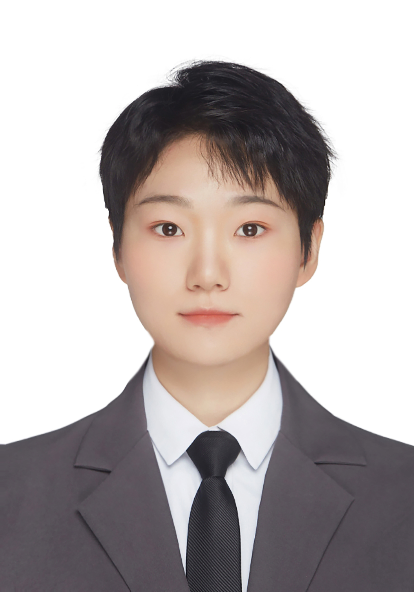
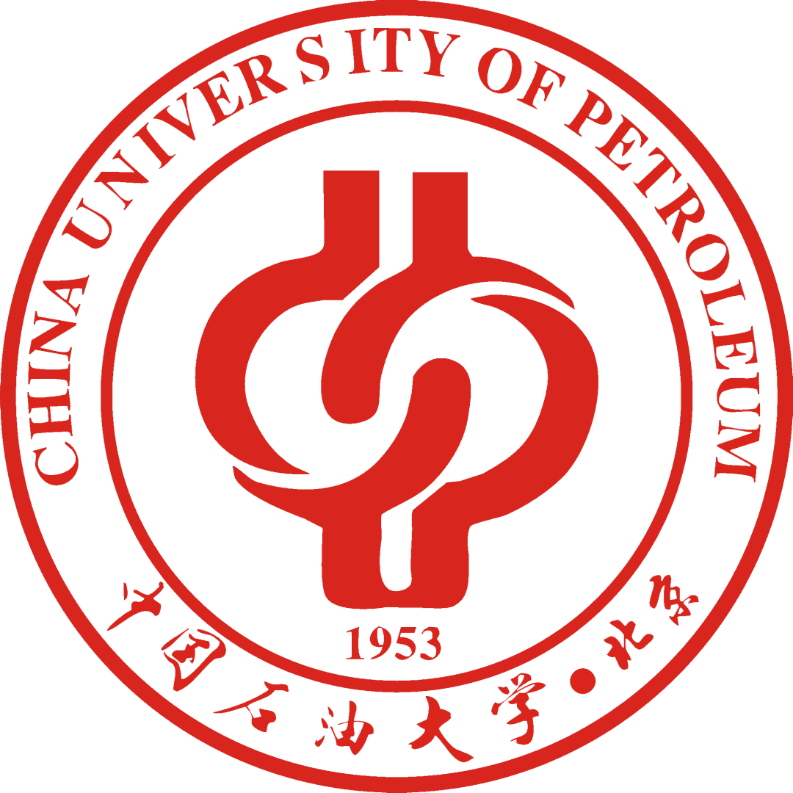

刘洋洋 (Yangyang Liu)
工程与设计学部 |
 |
关于我
目前，我是奥克兰大学的三年级博士研究生。
在此之前，我于2020年6月在中国石油大学（北京）获得学士学位（专业排名：2/60），并于2023年6月在中国石油大学（北京）获得硕士学位。
我的研究兴趣包括：认知与决策，认知数字孪生，智能制造； 知识图谱，生成式AI。
教育经历
|
|
博士, 奥克兰大学, 新西兰，奥克兰 [2023.10 至今]
|
|
 |
硕士, 中国石油大学（北京）, [2020.9 ~ 2023.6]
|
学士, 中国石油大学（北京）, [2016.9 ~ 2020.6]
|
学术论文 [Google Scholar]
-
An attempt to apply the homotopy method to the domain of machine learning.
Yang-yang Liu, Jian-wei Liu.
Expert Systems with Applications (SCI, IF: 8.665, Q1), 2023. -
Cognitive Digital Twin frameworks in manufacturing—A critical survey, evaluation criteria, and future directions.
Yang-yang Liu, T Ji, X Guo, X Xu, J Polzer.
Journal of Manufacturing Systems (SCI, IF: 13.9, Q1), 2025. -
A Survey of Cognitive Digital Twin and the Potential Use of LLMs.
Yangyang Liu, Tang Ji, Xiangyu Guo, Xun Xu, Jan Polzer.
53rd SME North American Manufacturing Research Conference (NAMRC 53), 2025. -
The Time-sequence Prediction via Temporal and Contextual Contrastive Representation Learning.
Yang-yang Liu, Jian-wei Liu.
19th Pacific Rim International Conference on Artificial Intelligence, 2022. -
AutoIE: An Automated Framework for Information Extraction from Scientific Literature.
Yangyang Liu, Shoubin Li, Kai Huang, Qing Wang.
International Conference on Knowledge Science, Engineering and Management, 2024. -
AI Agents and Agentic AI-Navigating a Plethora of Concepts for Future Manufacturing.
Y Ren, Y Liu, T Ji, X Xu.
Journal of Manufacturing Systems, 2025. -
LD-DOC: Light-Weight Domain-Adaptive Document Layout Analysis.
Zhangchi Gao, Shoubin Li, Yangyang Liu, Mingyang Li, Kai Huang, Yi Ren.
International Workshop on Document Analysis Systems, 2024. -
Joint Extraction of Entities and Relations Based on Multi-feature Fusion.
S Li, Z Chang, Y Liu.
International Journal of Emerging Technologies and Advanced Applications, 2024. -
Quality Analysis of high-density polyethylene based on Intelligent.
Jianchun Jiang, Xuhui Zhan, Yang-yang Liu, Chong Tang, Jia-nan Wang, Jian-wei Liu.
4th International Conference on Industrial Artificial Intelligence, 2022. -
Foundations of Digital Twin.
MKR Tuan Anh Nguyen, Jun Cai.
Book, 2025.
发明专利
基于深度学习的聚乙烯颗粒缺陷检测与识别系统与方法. 2021. CN112837311A. 国家发明专利
基于自学习模式的综丝分离检测系统与方法. 2020. CN110865084A. 国家发明专利
一种高速视频采集与处理电路结构. 2022. CN216249232U. 实用新型专利
一种自动化机械化纱线异常检测与控制方法. 2022. CN114120183A. 国家发明专利
项目经历
2021.6-2022.10, 石化科技文献关键信息自动抽取模型研究, 算法工程师, 中科院软件所横向项目
2021.3-2021.6, 知识抽取模型, 项目成员, 中科院软件所横向项目
2018.5-2019.5, 智能电子门禁系统, 项目负责人, 中国石油大学（北京）大学生科技创新项目
专业技能
- 工业自动化与机器人： 熟练掌握 ABB 机械臂的操作与编程（Rapid）；具备末端执行器（夹爪）的操作与制作经验；熟悉 PLC（可编程逻辑控制器）控制逻辑。
- 工业物联网与通信： 熟悉 OPC UA 协议及其在数字孪生虚实同步中的应用；具备工业网络通信基础。
- 计算机与统计基础： 精通 Python 语言、Linux 系统操作及 PyTorch 深度学习框架；系统修读过《随机过程》、《概率论》等统计学课程并取得优异成绩。